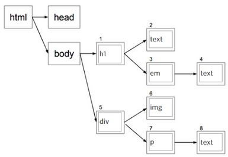

The internet is a vast collection of webpages (in the tens-of-billions), which are text documents most commonly of type HTML, interconnected via "hyperlinks."
To describe the internet in very broad terms: a web browser (a computer program for viewing webpages) requests an HTML file contained on the web (essentially the entirety of all servers and computers connected to the internet), via a protocol called HTTP (Hyper Text Transport Protocol), from the server (a computer optimized for hosting HTML documents and other files) on which the requested HTML file resides.The server in turn responds by sending the requested HTML file, also via HTTP and the web, to the web browser.
HTML, short for "Hyper Text Markup Language," is a filetype as well as a computer programming language containing text, and "markups" which web browser applications interpret as instructions for how to display content. For example, if a certain text phrase will appear in bold type, or where in the browser window to display a block of text. HTML documents may also contain references to other files like images and videos, as well as references to other HTML webpages, referred to as links or "hyperlinks." Links may in fact refer not only to other HTML files, but also to files of any other type.
HTML markups include tags, tag attributes, and container elements.
Some examples of tags are <b> (bold), <em> (emphasis: italics), <br> (line break), and <p> (paragraph). Certain tags are intended for altering font characteristics or formatting text; in such cases, an opening tag <TAG> and a closing tag </TAG> will encapsulate the text content to which such font and formatting constraints should be applied. Another example of a tag which alters then properties of enclosed text is the <a> (anchor) tag, which adds to text a "hyperlink" referring to another HTML file or other document. Text content contained within an anchor element becomes "clickable" when displayed by a web browser -- when that text is selected or left-clicked by a mouse, the web browser in turn will attempt to display the webpage or other file referenced by the hyperlink.
In cases where tags are intended for a use other than altering font or formatting properties of any proceeding text content, as is the case with the <img> (image) and <br> (line break) tags, a closing tag may be unnecessary -- tags of this sort are called "void tags."
An "element" refers to the HTML structure encompassing an opening tag, as well as any enclosed content and a closing tag (unless these two components are unnecessary, as with void tags). It should be noted that an element may contain any number of interior nested elements (i.e. "nested tags").
A programmer may be able to further specify the properties and behaviors of certain tags via their attributes, as is true with the anchor tag:
<a href:"www.google.com">click here to go to Google.com</a>Where "href:" is an attribute of the anchor tag, and "www.google.com" is the specified value of that attribute.
Container elements, which include <span> and <div> can be used as containers for text or other HTML content, which may also affect how the contained content will display in a web browser.
Both tags and container elements are categorized as either "inline" or "block," describing their behavior either as affecting HTML content only within a single line ("inline"), or as effectively creating an "invisible box" (whose height and width may be defined) around the content enclosed within the opening and closing tags ("block"). Inline elements include <b> , <em> , <img> , <br> , and <span>. Block elements include <p> and <div>.
CSS, short for "Cascading Style Sheet," is a programming language, complete with it's own syntax and rules, which is intended for controlling the visual style of a webpage. A CSS document may contain style parameters like font-size, font-color, border-width, background images, etc.
CSS is a powerful tool: one can simply change the CSS for a webpage and dramatically alter the way that page looks, without ever touching the HTML code.
By assigning class names to an HTML element (i.e. within an opening HTML tag, by adding the attribute "class" with an appropriate class name as its value) a web browser is provided with instructions for which CSS styles to use for that element. The value (the class name) of the class attribute on the HTML document refers to a CSS class of the same name located on a separate CSS document.
House Analogy for a Webpage:
DOM, short for "Document Object Model," is a standard convention which specifies how web browsers should translate the elements in an HTML text document into elements in a tree-like structure. The HTML structure displayed in Chrome Developer Tools is in essence a visual representation (in a form closely resembling an HTML document) of the DOM for a webpage.
I read elsewhere, including on the W3C (World Wide Web Consortium) website, that the DOM is an "API" (Application Programming Interface) -- if I understand correctly, the DOM can be thought of as a set of rules (in the form of a piece of code that a web browser understands) defining what web browser applications should do with HTML files.
The tree-like relationship of a page's HTML elements, or in other words the DOM of that page, can also represented as a block diagram:
It can be a useful exercise for a web developer to analyze the structure of an existing webpage by drawing rectangles, or "boxes," around all of the page's visible contents. To go about this process in a more tactile way, one could even print the page and cut out the boxes with scissors.
The process is straightforward and should start with identifying the largest boxes, i.e. the largest box representing the entire page, and secondary boxes representing grouped elements: for instance, one might draw a single box around separate images that all appear to be aligned on a horizontal plane. Continue the process by whittling down to smaller and smaller boxes.
Going through this effort can give a programmer a general sense for what the HTML code for a page might look like (especially in terms of the structure of <div> and <img> elements, visible contents, and some CSS parameters). This also seems like it would be a very practical method for getting started on coding a new webpage from a graphical mockup.
Chrome Developer Tools allows users to view HTML, CSS and Javascript code for any webpage (so far as I can tell), in split-screen format alongside or underneath the visible page. It should be noted that that the code displayed is not the actual code for the page, but the tree-like HTML structure of the page as Chrome interprets it (although it seems to me it could be very similar to the original code in many cases).
A couple of important points a programmer should consider when exploring the inner-workings of a page in this way:
In addition to providing insight into the HTML structure of a page, Developer Tools also allows users to view CSS Styles for that page, including the ability to change attribute values and immediately see the results in the page frame.
Although HTML and CSS are in fact plain text files which can be created and edited with a simple text editor like Windows Notepad, it is generally recommended that programmers use text editors specifically designed for computer programming. The code editor recommended in this course is Sublime Text 2, which features automatic coloration of different HTML components like tags and text content, as well as other visual aids like line numbers and indent guides. Using a code editor with such features can assist a programmer in writing programs which are both clean and comprehensible.
CSS stands for "Cascading Style Sheets." It is a programming language which allows programmers to avoid repetitive code, in large part through the use of classes. When several elements in an HTML document given the same class name, a single block of CSS code can apply to that entire group of elements. In this way, those elements will appear similarly-styled when displayed by a browser. In addition to classes, CSS rules can also be applied to standard HTML tags like <p> and <h1>.
To describe what the "Cascading" in CSS means: CSS rules which apply to a specified element (ancestor) will "cascade" down (imagine a waterfall) and apply to nested elements (descendants), unless more specific CSS rules are defined for those nested elements. To think of this in a slightly different way: the more specific the CSS rule, the higher the precedence. The "cascading" behavior of CSS is yet another way in which the language reduces repetitive code, promotes faster page-loading, and lower development costs.
This ancestor-descendent behavior is also referred to as "Inheritance." Inheritance generally applies to text-related properties, but not to box-related properties.
In addition to Inheritance, web browsers will also give precedence to CSS style rules in the following order with inline style code receiving the highest priority
Regarding browser default styles: there are currently many differences in the default styles of the most popular web browsers, which obviously is a dilemma for web developers. There is a push within the programming community to rectify this situation by introducing a universal default style sheet.
When possible, a programmer should create an external CSS document in the same directory as its related HTML documents (or perhaps in another directory which can be accessed by the browser). Any HTML documents which will use the external CSS file should contain a <link> tag with the CSS filename (the <link> tag should be nested inside of the <head> element) ; this instructs the browser on where to find the external document containing all of the needed CSS code. This approach lends itself to clearer HTML code, and makes future style adjustments fairly easy.
Alternatives to the above approach are internal style sheets (within the <head> of the HTML document), and inline style (by way of nesting CSS code within a <style> element). However, these methods should generally be avoided as they don’t offer as much benefit in terms of eliminating repetition compared with using external style sheets.
Selectors specify which HTML elements on a page styles will be applied to. Examples could be a standard HTML tag like <p> or a user defined class name, in the form ".descriptive_name"
Properties are the stylistic (visual) attributes for which a value or rule can be declared. CSS property examples are "font-weight" and "background-color," among what appear to be at least a couple hundred others. A property-value pair form a declaration.
An important note for those programming in CSS (and in other languages): it is impossible and unnecessary to get wrapped up in memorizing all of the properties and possible values that make up the language before attempting to use it -- one should go ahead with programming in CSS and get comfortable with frequenting online documentation as needed. The CSS reference linked in this lesson: https://developer.mozilla.org/en-US/docs/Web/CSS/Reference
It is best to use HTML tags which are semantically appropriate for the content contained within that element. That is to say, whenever possible, the chosen tag should have an intended use which is related to the content type -- like using <p> for a paragraph of text, or <h1> for a title, for instance.
The Box Model, which as far as I can tell applies to basically every HTML element, block and inline alike, consists of four concentric rectangles:
The total width an HTML box element will occupy on the screen is equal to the sum of the content, padding, and border widths; consequently, always having to keep the other two components in mind when making changes to one makes planning a page layout more challenging for developers.
The relatively recent CSS rule "border-sizing: border-box" makes the calculation of element size much easier, by including the border and pattern sizes, which makes it easier to layout boxes on the page. Just set the size of the overall box.
Box sizes can be set to a fixed number of pixels, or a percentage (in the case that they should automatically resize based on the size of the browser window); in the case of percentage sizes, boxes are often given a max-width attribute so that they can expand only up to a certain pixel width.
A good technique for distributing boxes horizontally within a <div> is to use the CSS Flexbox Layout module, most simply by adding the rule "display: flex" to a style sheet. For this method to work properly, the child elements need to be given a width smaller than the default 100% (via the "max-width" CSS property). Flexbox can be used in this way to override the default vertical-based behavior of divs, where nested divs are typically laid out one on top of the other. Flexbox appears to offer an abundance of features for distributing, automatically resizing, and wrapping child elements within a container element in any number of ways (it's not just for distributing and aligning horizontally, as was demonstrated in the lesson).
For some newer CSS properties like flexbox and "border-sizing: border-box" to work in certain browsers, it may be necessary to include what is called a "browser prefix" in the related CSS style declaration block which tells the browser to add support for that property. For example, flexbox is fully implemented and works by default in newer versions of Chrome and Firefox, but to get the feature to work in Safari one should add the following prefix to their CSS: "display: -webkit-flex;".
Work from big to small: when working from a design mock or some other form of instruction for coding a webpage, begin by identifying the boxes, then identify similar styles and semantic elements. Likewise, when beginning to code the page, start with the general layout of boxes (HTML) and then apply styles (CSS), fine-tuning from the biggest (or most general) style properties (like background-color, major box positioning adjustments, and title text) to smaller-and-smaller details (perhaps font-family, drop-shadow). By reviewing the updated page in a browser along the way, continue to fix things and fine-tune until the page styling appears as desired.
In addition to viewing the updated page in a browser, Chrome Dev Tools allows a developer to test different attributes and values prior to updating the actual code.
It's important to verify HTML and CSS in order to make sure that it is error-free and that it complies with browser standards.
A computer is a machine that can be “programmed.” So, we can think of computers as very fancy toasters (well, maybe not exactly…).
Computers do exactly and only what we tell them to do. A computer without a program is less useful than a toaster. However, unlike a toaster, with good programming a computer can carry out any computations imaginable. Modern computers can do so at a rate of billions of instructions per second.
A program is a set of specific instructions (or sequence of steps) to be carried out by a computer.
Computer Science is the study of solving problems through computing. This involves breaking problems into smaller pieces, and then defining those constituents of the larger problem as sequence of precise steps which can be carried out by a computer (a computer program). Computer programming is central to computer science. However, these are distinct fields in that computer science also involves the theoretical foundations of problem solving through computing, as well as the theory of computation in general. Or perhaps rather than thinking of the fields as separate, we can think of computer programming as a branch of the broader field of computer science.
Programming languages provide a means of instructing computers to carry out a sequence of computations. High-level programming languages like Python allow programmers to write code that in many ways resembles natural languages like English, albeit without any of the ambiguity and verbosity inherent to natural languages. “High-level” refers to the concept of abstraction, which makes it appreciably easier to write and understand such languages as compared to their “low-level” counterparts including machine code, assembly code, and numerical machine code (at the level of 1’s and 0’s).
There are many high-level programming languages. Each has its own vocabulary or grammar (set of strings or symbols) and syntax (the allowable combinations of these strings or symbols).
Fortran was the first high-level programming language -- it was developed by John Backus in the 1950’s while he worked at IBM. Backus is also credited with the creation of Backus-Naur form, which is a notation technique for describing the syntax rules of any language in a very clear and concise way.
Due to their high-level nature, languages like Python are intended to be run as input to a separate program called an interpreter, or sometimes a compiler in the case of various other languages; both interpreters and compilers are basically programs which translate high-level code into low-level code which a computer’s central processing unit can actually understand. I’m guessing you’d have to be pretty smart to create a new programming language -- and that much of the work involves developing a powerful interpreter or compiler. The main difference between interpreters and compilers, as I understand from this lesson, is that interpreters allow programs to run “on-the-fly,” while compilers must first compile a program before it is run. But I’m sure this is a simplistic understanding, and that each programming language has its advantages and disadvantages.
Python is the programming language we are using in this course. The name comes from “Monty Python.” Python is an interpreted language (meaning it runs through an interpreter). I remember reading somewhere that Python is the main scripting language at Google.
System for finding and fixing programming mistakes. Reviewing code, predicting what it will do (and/or maybe what it is intended to do), and if it will work or not. Run the program. If you get an error, try to decipher the error and fix the code accordingly. Then run program again, repeating the above process.
A variable is a name that refers to an expression. An expression can be many things, including any combination of values, strings, and other variables -- one can imagine variables are infinitely useful and common in serious computer programs. A variable is also something that can vary. That is to say that a variable can be made to refer to a different expression than its original assignment, and then to any number of other expressions, in turn. Or, a variable may be assigned to an expression that contains any number of other variables, which themselves can change. Variables are important because they can be used to store just about any data imagineable, and they also make code a lot easier to read when used effectively.
You can make a new variable with an assignment statement, as follows:
name = expressionNote that the = in the above assignment statement means something fundamentally different than an “=” sign in an algebraic equation. In math = means equality; in Python, it means take the expression on the right side of the statement and store it in the variable name on the left.
A string is a sequence of characters surrounded by single 'or double quotation ". Characters include any valid characters such as letters or numerals, and also special characters such as quotation marks.
Triple quotations """ or ''' are used when a string spanning multiple lines is desired
The + (addition) operator is used in Python to concatenate (or link together) strings. If used with numbers, the + operator assumes its expected mathematical function, giving a sum. Numbers and strings can’t be added together -- this is a semantic error in Python, meaning it just defies logic to try to do this. For some reason, though, the * (multiplication) operator duplicates and concatenates a string with itself n times, where n is the multiple of the string. To me, this really doesn’t make intuitive sense at all, but I suppose this could be a useful shortcut in certain scenarios and definitely seems important to be aware of for learning Python. An example of this behavior: print “8” * 3 results in 888
Indexing is used to return a one character string from an existing string. The characters in a string are automatically enumerated, where the 0th character is actually the first character of the string. For example, to print the first character of any string, one can use the following Python code:
print “this is a string”[0] --> tNote that the [0] in the above statement can be replaced with any expression, not just with a number.
To return characters starting from the end of the string, negative values can be used within the brackets, where [-1] returns the last character, [-2] the second-to-last, etc.
This is conceptually similar to indexing strings, however this method can result in strings containing more than one character. Here is how this looks in Python:
Where the first <expression>: is the start index, and the second :<expression> is the end index.
Find is a built in Python operation that returns a value based on whether or not it finds a specified target string within a search string.
<string>.find(<string>) → number (index position)Where the <string> in the parenthesis is the first argument to Find.
If the target string is found within the search string, Find will return the index number where the target string starts. If the target string is not found, -1 is returned.
Find also takes a number as a second argument, indicating at what index position of the search string it will start looking for the target string.
<string>.find(<string>,<number>)A function is a piece of code that does something with inputs. Most functions include a return statement which allows the function to output a value.
Making a function in Python involves writing code in the basic format below:
def <function>(<input>,<input>,...): return <output>Where the programmer specifies the name of the function, the names of the inputs (these can be thought of like declaration statements for input values yet unknown), and the return statement output.
Using a function involves calling the function, perhaps by using the print statement or by calling the function inside of another function, and giving it actual input values. The code for the print example might take the form:
print <function>(<input>,<input>)Where actual input values are provided (of types, ranges, etc. that are expected by the function). When the above line of code is executed, if the function works as intended then some value should be displayed.
Functions are great for avoiding repetition, because a programmer can just call a function by it’s name over and over again without needing to duplicate any of the underlying code.
If a function doesn’t have a return statement, then it basically does nothing (even though it is technically still a function, and the computer may still waste resources performing the function’s instructions).
A boolean is a built in a data type in Python (and in virtually every other programming language, from what I’ve seen) including the values True and False. True is equal to the integer value 1, and False is equal to 0.
If statements are used to control when a block of code is executed. An if statement in Python takes the basic form:
if <test_expression>: <code_block>Where the code represented by <code_block> is only executed when the if<test_expression> code evaluates to True.
While loops are used for repeatedly executing a block of code. In Python, while loops take the form: while <test_expression>: <code_block>
Where the code represented by <code_block> is only executed when the while
Loops can be broken with a break statement, which instructs the computer to execute the next line of code even if the while test expression is still True.
An else: statement is used for executing a block of code in the instance that a preceding conditional expression (like if or while) evaluates to False.
Mathematical equity comparison operators, such as < (less than), > (greater than), <= (less than or equal to), != (not equal), and == (equality) operate on numbers (or expressions that evaluate to numbers) and output a boolean value. It should be noted that the equality operator == is different than the assignment operator = in python. == is used literally to test for equality -- that is whether two expressions evaluate to the same number (i.e. 2 == (1+1) → True); whereas = is used to assign a variable name to any expression (i.e. two = 3).
or allows a conditional statement to evaluate to True when at least one of its test expressions is True.
Combining boolean values with an or operator results in the following values ("Boolean Or"). I believe the below logic is also called a “truth table:"
The way Python deals with or statements is that if the first expression is True, the entire conditional statement evaluates to True and the second expression is not even evaluated. This is important because the entire expression is True even if the second expression represents an undefined variable, or some expression that would otherwise result in an error.
On the other hand, if the first expression is False, then the value of the entire conditional statement is the value of the second expression. In this latter case, it is possible to encounter an error if the second expression includes some undefined variable or out-of-range value, etc.
The and operator is used in a syntactically similar fashion to or, except that and allows a conditional statement to evaluate to True only when all of its test expressions are True. The behavior of combining boolean values with an and operator is as follows:
Alan Turing was a British mathemetician, famous for his work during World War II when he designed computers that decyphered messages sent by the Nazi Enigma Machines.
A few years prior to this, Turing invented the very idea of computers. In a paper published in 1936, Turing describes a theoretical computing machine with infinite memory called a Turing machine, and hypothesizes that Turing Machines can compute basically any imaginable function (there seems to be a bit more technicality to this, from the online articles I've skimmed, but I'll stick to this explanation for now...). Turing machines are the precursor to modern computers & also provide a way of describing the limits of computers and programming languages. A programming language, such as Python, is said to be "Turing complete" if it can be used to simulate the behavior of a Turing machine. Alan Turing is recognized by many as the founder of computer science.
A list provides a way of storing mutable structured data. A list in Python is can be written as follows:
[‘item1’, ‘item2’, ‘item3’]Note that the any of the list contents above, like the string ‘item1’, can be replaced with expressions of any other type -- numbers, booleans, expressions, or other lists. The list contents above would also be assigned index values [0], [1], and [2] -- this works in an analogous way to indexing with strings. However, it is important to realize that strings are different in that they are sequences of characters, and cannot include other data types. Strings are also immutable, as explained below.
Mutability refers to whether or not an object’s value can be changed.
Strings and numbers are immutable objects, meaning that their values cannot be changed. Take the code below, for example:
p = 45 q = 45 print p → 45 p = 50 print p → 50 print q → 45In the above example, we first assign the variables p and q to the number 45. When we re-assign the variable p to the number 50, this does not change the value 45; it only makes the variable p refer to a different number. The number 45 still exists, as we can see with the statement print q → 45. The same would be true had we assigned these variables to random strings. All numbers exist and can be referred to via variables; likewise, all imaginable combinations of characters exist and can be referred to via variables.
Lists are mutable objects, meaning that their values can be changed. For example, in Python the built in append operation mutates an existing list by adding elements to that list:
<list>.append(<element>)Using this format, the expression in <element> becomes the [n]th index of of a list of length n, or the [0]th index of a previously empty list ([]). If the <element> being appended is itself another list (or a variable that refers to a list), this still only appends a single element containing the list.
Another way of mutating a list would be to use code such as the following:
test_list = [‘h’,‘e’,‘l’,‘l’,‘o’] test_list[0] = ‘Y’ print test_list → [‘Y’,‘e’,‘l’,‘l’,‘o’]The above behavior in fact changes the actual list which the variable test_list refers to.
Aliasing happens when more than one variable refers to the same object. As in the below code:
x = 27 y = x print x → 27 print y → 27In contrast to the above examples which feature mutation of lists, in order to concatenate an object to a list (with the + operator), one could use the following code:
test_list = [‘Y’,‘e’,‘l’,‘l’,‘o’] new_list = test_list + [‘w’] print test_list → [‘Y’,‘e’,‘l’,‘l’,‘o’] print new_list → [‘Y’,‘e’,‘l’,‘l’,‘o’,‘w’]Concatenation does not mutate the original list; rather, it creates a new list.
We could also have concatenated a list to the original list, rather than a single character. Unlike using append to add a list to another list, which adds a single list element containing the appended list, concatenation adds each of the elements contained in the list being added to their own index. For example:
list_one = [1,2,3] list_two = list_one + [4,5,6] print list_two → [1,2,3,4,5,6] print len(list_two) → 6whereas:
list_three = [10,9,8] list_three.append([7,6,5]) print list_three → [10,9,8,[7,6,5]] print len(list_three) → 4As a side note to the concatenation example above, if one actually wanted to change the value that the original variable refers to, this is possible with the += operator, as in the following code:
list_one = [1,2,3] list_one += [4,5,6] print list_one → [1,2,3,4,5,6]The second statement above is really the same thing as list_one = list_one + [4,5,6], which involves the concatenation + operator. For this reason, we are still creating a new list & at the same time reassigning the original variable to that new list -- this is different from performing mutation.
A for loop is a construct that allows a block of code to iterate over structured data, including the contents of a list, one element at a time. The below function, which incorporates a for loop, returns the sum of any list of numbers:
def sum_list(any_num_list): total_so_far = 0 for next_element in any_num_list: total_so_far = total_so_far + next_element return total_so_far print sum_list([1,2,3,4,5]) → 15